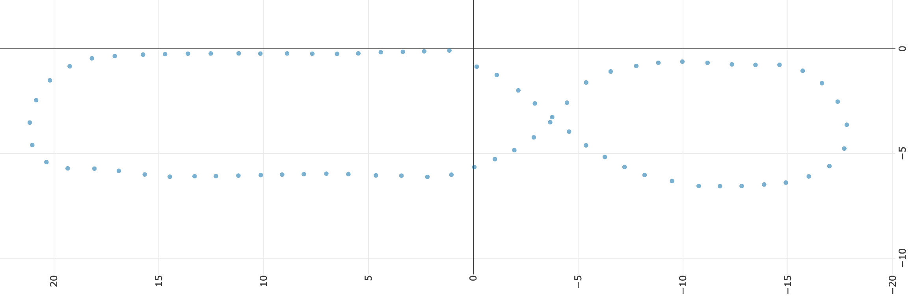

The Path Follow Template
The path follow template is an alternative to the deep learning template. The deep learning template is great for an indoor track where lighting conditions and the details of the room can be controlled, but it can be more difficult to get working outside where lighting conditions are variable and things change in the environment. Outside we have access to GPS; the path_follow template allows you to record a path using a GPS receiver and then configure an autopilot that can follow that path.
GPS positions are read from the GPS receiver over a serial port. We read these as NMEA sentences; a line oriented protocol that most GPS receivers use by default. The NMEA sentences include positions as latitude and longitude; we then convert those to a local coordinate system in meters.
When we record a path, we save each (x, y) coordinate pair (each waypoint) we get from the GPS receiver into an array in memory. We can then save that to a CSV file which has one (x, y) coordinate pair per line. Later, we can read this csv file back into memory. Once we have our waypoints in memory, we can enter autopilot mode and follow those points.
Similar to the deep learning template, we have 3 modes of operation:
- In User driving mode you manually control the car. Again similar to the deep learning template, you can use the web controller and/or a game controller to steer, apply throttle and choose actions using buttons.
- In Autosteering mode the car will try to follow the set of recorded waypoints, but it will only control steering; you still control throttle manually. This is a good mode to start in when following the path as you can safely stop the car by letting off the throttle. It's also helpful in determining the maximum speed at which the car can reliably follow the waypoints.
- In Autopilot mode the car will try to follow the set of recorded waypoints by controlling both steering and throttle. This is fully autonomous. To stop the car use your controller to end User mode.
Path Follow Autopilot in Action
Before we can record or follow a path, we need to create an application and do a little configuration.
Create a path follow Application
You can create a path follow application similarly to the how we create a deep learning application; we just tell it to use the path_follow template instead of the default template. First, make sure your donkeycar python environment is activated, then use the createcar command to create your application folder.
donkey createcar --template=path_follow --path=~/mycar
When updating to a new version of donkeycar, you will want to refresh your application folder. You can do this with the same command, but add --overwrite so that it does not erase your myconfig.py file.
donkey createcar --template=path_follow --path=~/mycar --overwrite
Configuration
Again, like the deep learning template, we can change default configuration values by editing the myconfig.py file in the mycar folder you created with the createcar command.
You will need to calibrate and configure the drivetrain as described in Calibrate your Car. If you have a game controller paired to your car, then you will want to configure it as described in Controllers.
Configuring GPS
In myconfig.py, search for the 'gps' section. Make sure HAVE_GPS = True is set. You will need to determine the serial port that the GPS receiver is connected to and the baud rate to use. If possible, set your serial port to 115200 baud to get good throughput.
GPS_SERIAL = <serialport>- The
<serialport>value differs depending on how you have your gps receiver connected (by usb or gpio serial) and by SBC (RPi vs Nano) - You can list all potential serial ports;
ls /dev/tty*. Note that most of these are actually not usable. - If connecting to the Nano USB port, use
/dev/ttyUSB0. - If connecting to the RPi USB port, use
/dev/ttyACM01. - If connecting to the default RPi gpio serial port (board pins 8&10) use
/dev/ttyAMA0. - If connecting to the default Jetson Nano gpio serial port (board pins 8&10) use
/dev/ttyTHS1.
- The
GPS_SERIAL_BAUDRATE = <baudrate>- The
<baudrate>value differs depending on your gps and if you have changed it using U-Center. - when connecting between the SBC's USB port and the usb port on the gps receiver the baud rate is detected by USB, so choose 115200 so you have a fast connection.
- The ZED-F9P's other serial ports default to 38400 baud.
- Cheap gps receivers generally default to 9600 baud.
- See this video on how to use UBlox' U-Center to change the baudrate of the uarts on a UBlox GPS receiver.
- The
Note that both the RPi and Jetson Nano may be using the default gpio serial port as a login console (you can connect up a serial 'terminal' and login). If using the gpio serial ports you need to disable the login console. See Writing to a serial port for details.
Those two settings are the only ones related to the GPS receiver that need to be set in myconfig.py. Most GPS Receivers can also be directly configured to change things like the baudrate of the serial ports or how fast position estimates are sent to the computer. Ideally the rate of position estimates should be as fast as possible, but different receivers have different upper limits and there is some tradeoff between the rate of updates and how accurate they are. U-Blox based GPS receivers can be configured with U-Blox U-Center software; see the U-Center section of Donkeycar Meets RTK GPS for some details. Other chipset manufacturers have their own software; you will have to check your GPS receiver to determine the manufacturer. If you are using RTK high resolution GPS then you need to do a lot more configuration and wiring outside of Donkeycar. See Donkeycar meets RTK GPS for a detailed discussion of one way to setup an RTK GPS receiver for use with Donkeycar. Here is a related video that goes over the same information.
Configuring Encoders and Kinematics
An encoder setup can be used to estimate not only the vehicles' speed, but its position; that then allows encoders to be used with the Path Follow template in place of GPS, so it can be used indoors. This requires a few configurations to be set in the myconfig.py; basically measurements of the wheel diameter, the length of the wheel base and the length of the axle. See Odometer Software Setup for details.
Configure button actions
You can use either the web controller or a game controller. You can assign a game pad button OR web ui button to an action by editing the button assignments in myconfig.py. The name of the game pad buttons depend on the game controller you have configured (NOTE: one button is reserved for the emergency stop; you can see which one is assigned by looking at the console output when you start that car using the python manage.py drive command). The 5 available web ui buttons are named web/w1 to web/w5. If you assign None action to a button then it is ignored.
SAVE_PATH_BTNis the button to save the in-memory path to a file.LOAD_PATH_BTNis the button to (re)load path from the csv file into memory.RESET_ORIGIN_BTNis the button to set the current position as the origin.ERASE_PATH_BTNis the button to erase path from memory and reset the origin.TOGGLE_RECORDING_BTNis the button to toggle recording mode on or off. Note that there is a pre-assigned button in the web ui, so there is not need to assign this button to one of theweb/w*buttons if you are using the web ui.INC_PID_D_BTNis the button to change PID 'D' constant by PID_D_DELTA.DEC_PID_D_BTNis the button to change PID 'D' constant by -PID_D_DELTAINC_PID_P_BTNis the button to change PID 'P' constant by PID_P_DELTADEC_PID_P_BTNis the button to change PID 'P' constant by -PID_P_DELTA
Recording a path
The algorithm assumes we will be driving in a continuous connected path such that the start and end are the same. You can adjust the space between recorded waypoints by editing the PATH_MIN_DIST value in myconfig.py You can change the name and location of the saved file by editing the PATH_FILENAME value.
The workflow for recording a path is as follows:
- Enter User driving mode using either the web controller or a game controller.
- Move the car to the desired starting point
- Erase the path in memory (which will also reset the origin).
- Toggle recording on.
- Drive the car manually around the track until you reach the desired starting point again.
- Toggle recording off.
- If desired, save the path.
The path is saved as a comma-separated-values (.csv) file. Each line in the file contains 3 numbers separated by commas; x-position, y-position, throttle. The x and y positions are where the car was when the position was read and the throttle is the throttle value that was in effect at that time. Here is a section from a path file for illustration;
0.0033510593930259347, 7.996719985734671, 0.14
0.11206169077195227, 9.325505392625928, 0.16
0.20344207028392702, 10.525161047000438, 0.18
0.311049185693264, 11.724678185302764, 0.14
0.23874327179510146, 12.75951695209369, 0.13
0.26568955020047724, 14.015127370599657, 0.15
0.35580877534812316, 15.06704786233604, 0.18
0.4303318051388487, 16.192974457982928, 0.15
0.2126157897291705, 17.302927474025637, 0.17
-0.37973403913201764, 18.24986434960738, 0.17
-1.2822835729457438, 18.97783037694171, 0.17
-2.4313870034529828, 19.338536370545626, 0.17
-3.633584696042817, 19.182584955357015, 0.17
-4.694471199880354, 18.471380048431456, 0.25
-5.2241318183369, 17.256997687276453, 0.25
-5.462499356712215, 15.947787401732057, 0.25
-5.5869644057238474, 14.674541235901415, 0.25
Since the path is saved in a simple .csv file it can be visualized in many tools. A simple one to visualize your path is CSV Plot. Use the button in the upper-right (just to the left of the home button) to make the axis scale square. Here is an example path (rotated to fit a little better);

Following a path
The current autopilot uses a constant throttle value. You can set this by editing the PID_THROTTLE value in myconfig.py.
The workflow for following a path is as follows:
- Enter User driving mode using either the web controller or a game controller.
- Move the car to the desired starting point.
- If you are following a saved path, then load the path into memory.
- Reset the origin (be careful; don't erase the path, just reset the origin).
- Enter Autosteering or Autopilot driving mode. If you are in Autosteering mode you will need to manually provide throttle for the car to move. If you are in Autopilot mode the car should drive itself completely.
- Re-enter User mode to stop the car.
The Path Follow Algorithm
The algorithm we use for following the path is extremely simple; it's the Hello World of path following.
- Get the vehicle's current GPS position
- Find the nearest point in the list of waypoints; starting at the last nearest waypoint, search up to
PATH_SEARCH_LENGTHpoints and choose the waypoint that is closest to the current position. - Choose the waypoint
PATH_LOOK_AHEADpoints ahead of the closest point on the path. - Choose the waypoint
PATH_LOOK_BEHINDpoints behind the closes point on the path. - Use behind and ahead waypoints to create a line that represents the desired track.
- Calculate the cross-track error between the vehicle's current position and the desired track. The cross-track error is a signed value that represents the distance from the line and which side of the line we are on.
- Use the cross-track error as the error input into the PID controller that controls steering.
- The PID controller outputs a new steering value.
In addition to steering, the path follow controller will set the throttle to the throttle saved with the closest point on the path scaled by the PID_THROTTLE value in the myconfig.py file. That can be overridden if USE_CONSTANT_THROTTLE = True in the myconfig.py, in which case it will use PID_THROTTLE as the constant throttle.
Configuring Path Follow Parameters
So the algorithm uses the cross-track error between a desired line and the vehicle's measured position to decide how much and which way to steer. But the path we recorded is not a simple line; it is a lot of points that is typically some kind of circuit. As described above, we use the vehicle's current position to choose a short segment of the path that we use as our desired track. That short segment is recalculated every time we get a new measured car position. There are a few configuration parameters that determine exactly which two points on the path that we use to calculate the desired track line.
PATH_SEARCH_LENGTH = None # number of points to search for closest point, None to search entire path
PATH_LOOK_AHEAD = 1 # number of points ahead of the closest point to include in cte track
PATH_LOOK_BEHIND = 1 # number of points behind the closest point to include in cte track
Generally, if you are driving very fast you might want the look ahead to be larger than if driving slowly so that your steering can anticipate upcoming curves. Increasing the length of the resulting track line, by increasing the look behind and/or look ahead, also acts as a noise filter; it smooths out the track. This reduces the amount of jitter in the controller. However, this must be balanced with the true curves in the path; longer track segments effectively 'flatten' curves and so can result in understeer; not steering enough when on a curve.
What is a PID Controller?
A PID controller is function that takes two parameters; 1) a target value to be achieved and 2) the current measured value. The PID function uses the difference between the target value and the measured value (the error) to calculate a control value that can be used to achieve the target value (so to drive the error between the desired value and the measured value to zero).
In our case, we want to stay on the desired track; we want the cross-track error (the distance between the desired line and the vehicle's measured position) to be zero; the control value that is output is a steering value that should move the vehicle closer to the desired line. So our PID controller is controlling steering based on which side of the line and how far from the desired line the car is.
The algorithm uses the sign of the cross track error to determine which way to steer. Naturally, if the cross-track error indicates the vehicle is to the left of the desired track, then the vehicle should turn right to move towards the desired track. If the cross-track error indicates the vehicle is to the right of the desired track, then the vehicle should turn left to move towards the desired track. If the vehicle is on the desired track, then the steering should be neutral.
But how much should we steer; should we turn only slightly or should be turn very hard? The PID controller will output a steering value that is proportional to the magnitude of the cross-track error. So if we are near the desired track, then it will steer slightly. If we are far off the desired track then it will turn harder.
Determining PID Coefficients
The PID coefficients are the most important (and time consuming) parameters to configure. If they are not correct for your car then it will not follow the path. The coefficients can be changed by editing their values in the myconfig.py file.
PID_Pis the proportional coefficient; it is multiplied with the cross-track error. This is the most important parameter; it contributes the most to the output steering value and in some cases may be all that is needed to follow the line. If this is too small then car will not turn enough when it reaches a curve. If this to too large then it will over-react to small changes in the path and may start turning in circles; especially when it gets to a curve.PID_Dis the differential coefficient; it is multiplied with the change in the cross-track error. This parameter can be useful in reducing oscillations and overshoot.PID_Iis the integral coefficient; it is multiplied with the total accumulated cross-track error. This may be useful in reducing offsets caused by accumulated error; such as if one wheel is slightly smaller in diameter than another.
As descibed in the Configuring Button Actions section above, you can also assign functions like INC_PID_P_BTN or DEC_PID_P_BTN to the game controller or web ui buttons to modify the PID parameters 'on the fly'. This helps when you are figuring out the best coefficients. The button functions allow you to change values without having to stop the car, edit myconfig.py and restart the car.
Determining PID Coefficients can be difficult. One approach is:
- First determine the P coefficient.
- zero out the D and the I coefficients.
- Use a kind of 'binary' search to find a value where the vehicle will roughly follow a recorded straight line; probably oscillating around it. It will be weaving like it is under the influence.
- To do this, record a short straight line, maybe 6 meters. You can do this by putting the car into recording mode and walking with the car (so you can keep the throttle at zero). Once the short line is recorded put the car in autopilot mode and stand in the middle of the line holding the car parallel to the line; the car's front wheels should stay stable and straight. Now slowly move the car off the line, keeping the car parallel to the line; the car should start to turn back towards the line. The more off the line you move the more that car should turn. Try both sides of the line.
- If the car turns away from the line rather than towards the line then change the sign of the P value.
- If the car turns very little then increase the P value.
- If the car turns very abruptly when off the line then reduce the P value.
- Play with the P value until you get the car to turn back to the line smoothly and proportional to how far from the line it is held.
- Now try actually driving the line in autopilot mode. The car may oscillate around the line; it if oscillates a lot then reduce the P value. Adjust the P value so it can actually drive that line from one end to the other. It will likely go out of control at the end of the line; that is normal because the path is not closed.
- Once you can drive a short straight line then drive the car in autopilot on a full closed path with only the P value set. Make sure there is a fairly tight turn in the path. Adjust the P value until you get acceptable performance. Once you get that working then you can refine things with the D value.
- Next find a D coefficient that reduces the weaving (oscillations) on a straight line. Then record a path with a tight turn. Find a D coefficient that reduces the overshoot when turning.
- You may not even need the I value. If the car becomes unstable after driving for a while then you may want to start to set this value. It will likely be much smaller than the other values.
Be patient. Start with a reasonably slow speed. Change one thing at a time and test the change; don't make many changes at once. Write down what is working.
Once you have a stable PID controller, then you can figure our just how fast you can go with it before autopilot becomes unstable. If you want to go faster then set the desired speed and start tweaking the values again using the method suggested above.